Hi, I'm Lovel Española, an IT student passionate about technology and innovation.
Learn More About MeI am a dedicated IT student with a passion for learning and creating innovative solutions. My journey in technology has equipped me with a strong foundation in various programming languages and frameworks. I enjoy tackling challenges and turning ideas into reality through code.
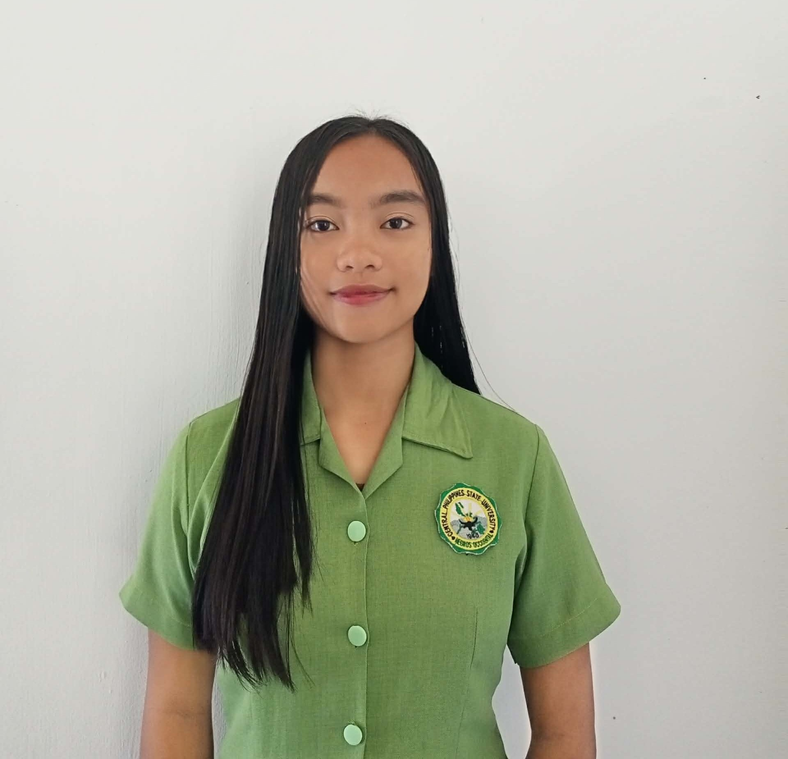
HTML, CSS, JavaScript, PHP
Java, C++, PHP
MySQL, MongoDB, PostgreSQL
Git, Github, Figma, Wordpress
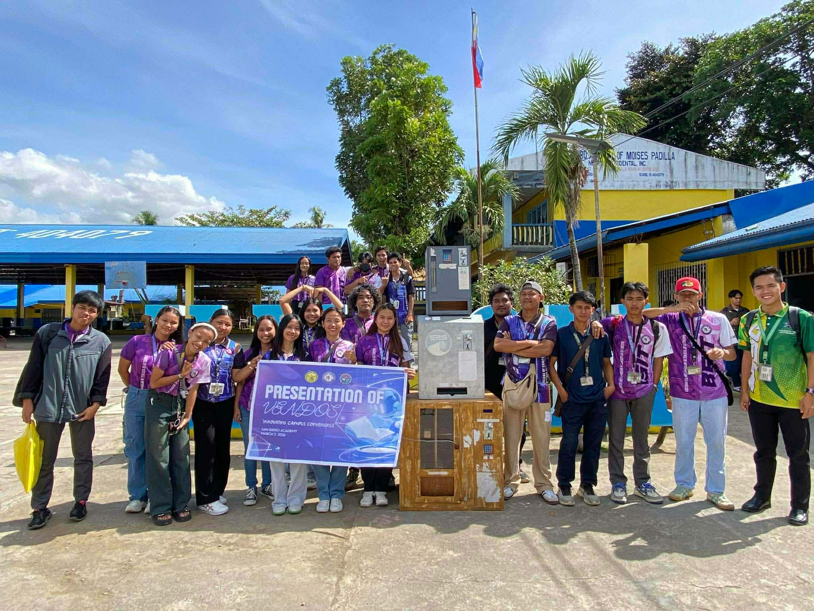
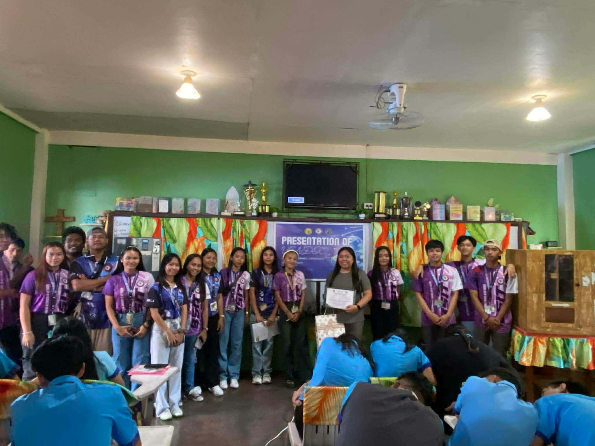
Presenting our projects—Ballpen Vendo PenPoint, Food Vendo Foodie Vend, and Paper Vendo PaperSpot—to the Grade 12 TVL students of San Isidro Academy was both a challenging and rewarding experience. It helped me realize the importance of clear communication, especially when explaining technical ideas to an audience with different levels of understanding. At first, I felt nervous standing in front of many students, but as the presentation went on, I became more confident and comfortable. I learned how to properly demonstrate our systems, highlight their purpose, and answer questions effectively. This experience also taught me the value of teamwork and preparation. Each member of our group had a role, and our coordination made the presentation smoother and more organized. We also saw how our ideas could be useful in real-life situations, especially in helping students access basic needs like pens, food, and paper conveniently through vending machines. The reactions and interest of the Grade 12 students motivated us and made our hard work feel appreciated.
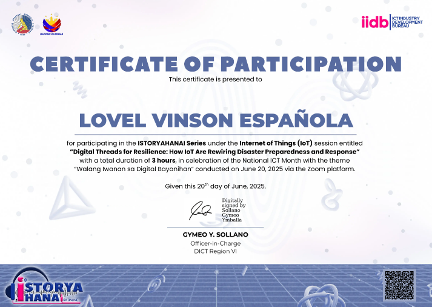
Issued by: DICT
Date: 2026
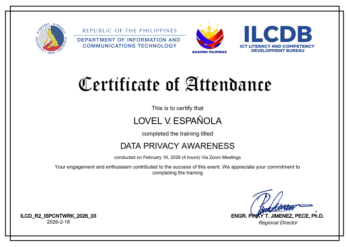
Issued by: DICT
Date: 2026
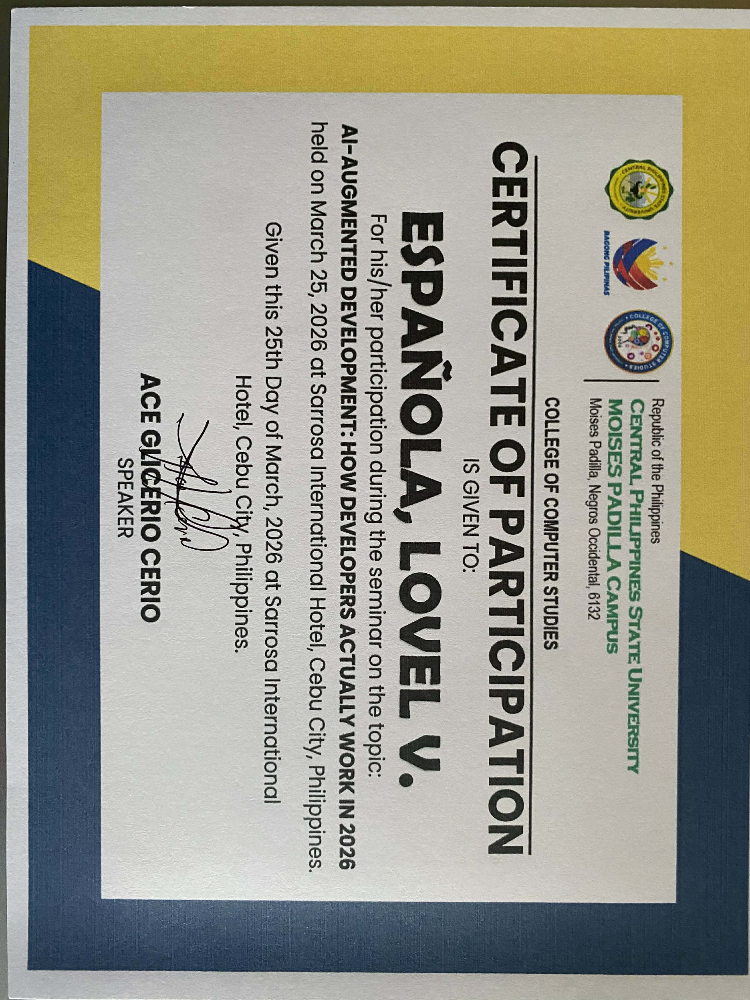
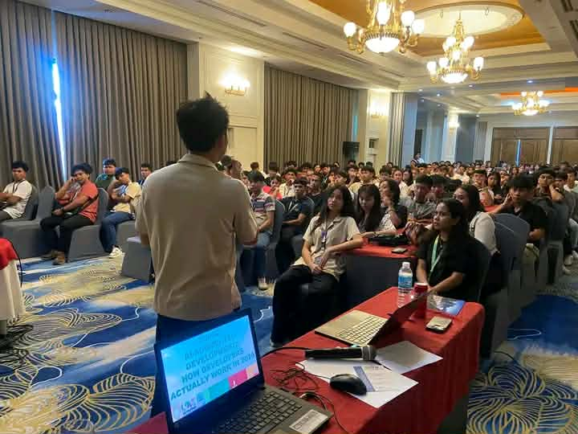
One of the most meaningful learnings I gained from the seminar on AI-Augmented Development is how important it is to work with AI rather than just rely on it. I realized that AI is not there to replace developers, but to assist and improve our workflow by making tasks faster and more efficient. It showed me that understanding how to properly use AI tools can make a big difference in productivity and creativity. Another important lesson for me was during the prompt-making activity. I learned that creating clear and detailed prompts is essential when working with AI because it directly affects the quality of the output. If the instructions are vague, the results will also be unclear. The activity was enjoyable and competitive, which encouraged active participation and made the learning process more exciting. It also helped me practice thinking critically about how to communicate instructions effectively. Overall, the seminar helped me appreciate the value of combining human skills with AI technology. It made me realize that as a future IT professional, I should continuously improve not only my technical skills but also my ability to guide AI tools properly. This experience motivated me to explore more about AI and how I can use it responsibly and creatively in my future projects.
Issued by: Gayle Marie Dela Torre
Date: 2026
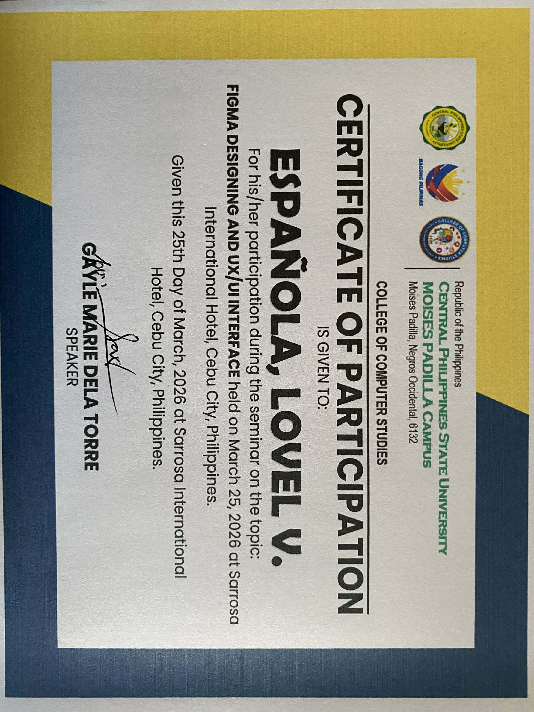
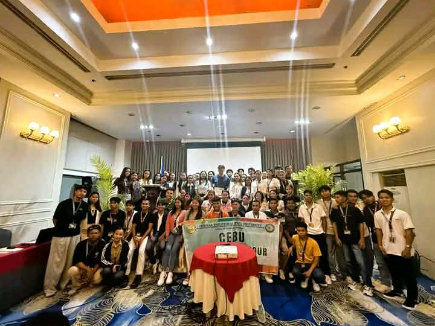
The seminar about UI/UX Designing and Figma was a fun and meaningful experience for me. During the talk of Sir Deson G. Maquilang, he asked random students about their expectations, which made the session interactive and engaging. It helped me feel more involved and interested in the discussion. I learned that when designing using Figma, it is important to follow a proper design process and not just focus on how the design looks, but also on how it works and how users will interact with it. The activity where some students were asked to draw an apple, tree, happiness, and a login button really caught my attention. It showed that people have different ideas, perspectives, and ways of thinking. Even with the same instructions, the outputs were all unique. This made me realize that creativity varies from person to person, and brainstorming is an important part of the design process. Overall, the seminar helped me understand that UI/UX designing is not just about aesthetics, but also about solving problems and improving user experience. It inspired me to be more creative and to always consider the needs of the users when designing. This experience also motivated me to explore more about Figma and improve my design skills in the future.
Issued by: Gayle Marie Dela Torre
Date: 2026
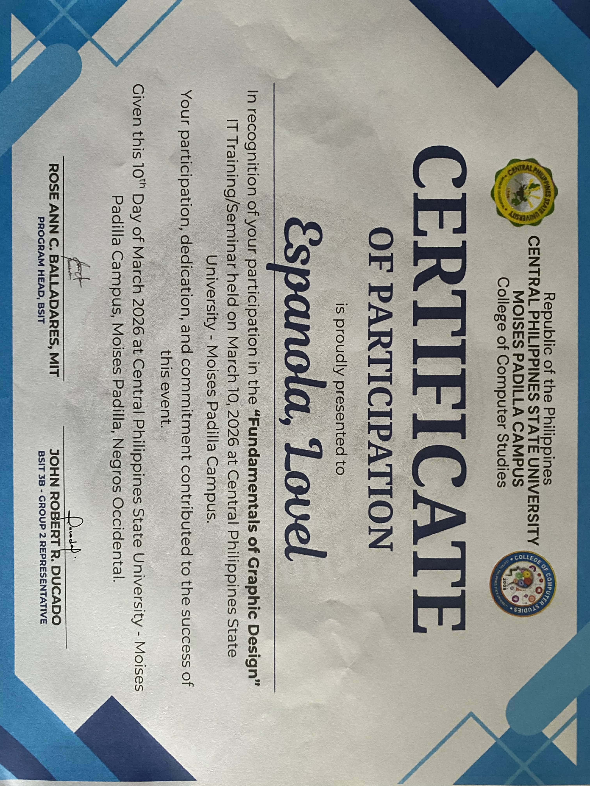
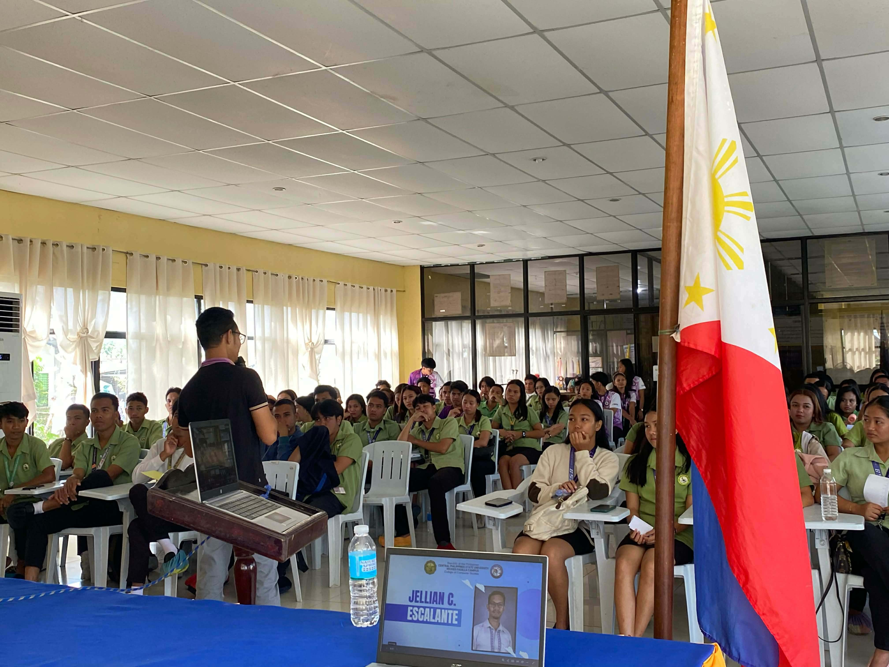
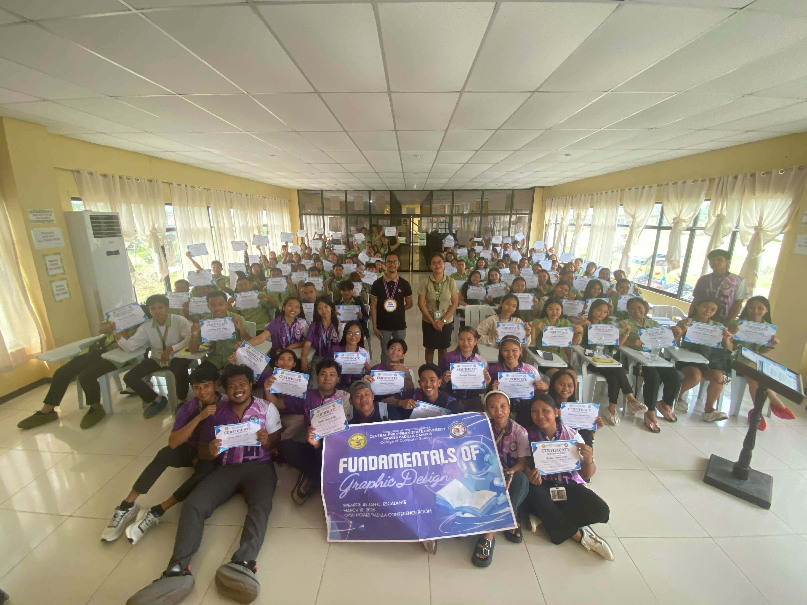
The seminar titled “Fundamentals of Graphic Design” by Sir Jellian C. Escalante was a very informative and engaging experience for me. I learned that graphic design is not just about making something look visually appealing, but also about communicating ideas clearly and effectively. He discussed important design principles such as balance, contrast, alignment, and consistency, which are essential in creating meaningful and well-organized designs. I also appreciated how interactive the session was, as it encouraged student participation and made the discussion easier to understand. Through this seminar, I realized that good design requires careful planning and creativity, where every element like color, font, and layout has a purpose. In conclusion, this experience helped me understand the importance of graphic design in our field as IT students and motivated me to improve my skills and apply these principles in my future projects.
Issued by: Sir Jellian C. Escalante
Date: 2026